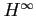

Next: About this document ...
Up: Automatic Artifact Removal (AAR)
Previous: Acknowledgments
Contents
- 1
-
A. J. Bell and T. J. Sejnowski.
An information maximisation approach to blind separation and blind
deconvolution.
Neural Comp., 7(6):1129-1159, 1995.
- 2
-
A. Belouchrani, K. Abed Meraim, J.-F. Cardoso, and E. Moulines.
A blind source separation technique based on second order statistics.
IEEE T. on Signal Processing, 45(2):434-444, 1997.
- 3
-
J.-F. Cardoso.
High-order contrasts for Independent Component Analysis.
Neural Comput., pages 157-192, 1999.
- 4
-
J.-F. Cardoso.
Implementation in MATLAB/Octave for the ICA of real-valued data., 2005.
- 5
-
De Clercq, W.; Vergult. A.; Vanrumste B.; Van Paesschen W.; Van Huffel S.
Canonical correlation analysis applied to remove muscle artifacts
from the electroencephalogram.
Biomedical Engineering, IEEE Transactions on,
53(12):2583-2587, Nov. 2006.
- 7
-
A. Delorme and S. Makeig.
EEGLAB: an open source toolbox for analysis of single-trial EEG
dynamics including independent component analysis.
J. Neurosci. Meth., 134:9-21, 2004.
- 8
-
G. Gómez-Herrero, W. De Clercq, H. Anwar, Egiazarian K. Kara, O.,
S. Van Huffel, , and W. Van Paesschen.
Automatic removal of ocular artifacts in the eeg without a reference
eog channel.
In Proc. NORSIG 2006, Reykjavik, Iceland, pages 130-133, 2006.
- 9
-
Germán Gómez-Herrero, Z. Koldovský, P. Tichavský, and
K. Egiazarian.
A fast algorithm for blind separation of non-Gaussian and
time-correlated signals.
In Proc. EUSIPCO 2007, Poznan, Poland, 2007.
- 10
-
S. Haykin.
Adaptive filter theory (3rd ed.).
Prentice-Hall, Inc., Upper Saddle River, NJ, USA, 1996.
- 11
-
P. He, G. Wilson, and C. Russell.
Removal of ocular artifacts from electro-encephalogram by adaptive
filtering.
Med. Biol. Eng. Comp., 42:407-412, 2004.
- 12
-
A. Hyvärinen.
Fast and robust fixed-point algorithms for Independent Component
Analysis.
IEEE T. on Neural Networks, 10(3):626-634, 1999.
- 13
-
Z. Koldovský.
Matlab implementation of EFICA, 2007.
- 14
-
Z. Koldovský, P. Tichavský, and E. Oja.
Efficient variant of algorithm fastica for independent component
analysis attaining the cramer-rao lower bound.
IEEE T. Neural Networks, 17(5):1265-1277, 2006.
- 15
-
A. P. Liavas and P. A. Regalia.
On the numerical stability and accuracy of the conventional recursive
least squares algorithm, 1999.
- 16
-
S. Makeig, A. J. Bell, Jung T. P., and T. J. Sejnowski.
Independent component analysis of electroencephalographic data.
Adv. Neural Inf. Process. Syst., 8:145-151, 1996.
- 17
-
S. Puthusserypady and T. Ratnarajah.

adaptive filters for eye blink artifact minimization
from electroencephalogram.
IEEE Signal Proc. Let., 12(12):816-819, 2005.
- 18
-
S. Puthusserypady and T. Ratnarajah.
Robust adaptive techniques for minimization of eog artefacts from eeg
signals.
Signal Process., 86(9):2351-2363, 2006.
- 19
-
The FastICA team at Helsinki University of Technology.
The FastICA MATLAB package.
- 20
-
P. Tichavský.
Matlab implementation of iWASOBI, 2007.
- 21
-
P. Tichavský, E. Doron, and A. Yeredor.
A computationally affordable implementation of an asymptotically
optimal BSS algorithm for AR sources.
In Proc. EUSIPCO'06, Florence, Italy, 2006.
- 22
-
P. Tichavský and Z. Koldovský.
Matlab implementation of MULTICOMBI, 2007.
- 23
-
P. Tichavský, Z. Koldovský, A. Yeredor, G. Gómez-Herrero, and
E. Doron.
A hybrid technique for blind separation of non-Gaussian and
time-correlated sources using a multicomponent approach.
To appear in IEEE Trans. Neural Networks, 2008.
- 24
-
P. Tichavský, A. Yeredor, and J. Nielsen.
A fast approximate joint diagonalization algorithm using a criterion
with a block diagonal weight matrix.
In Submitted to ICASSP 2008, 2007.
- 25
-
A. Yeredor.
Blind separation of Gaussian sources via second-order statistics
with asymptotically optimal weighting.
IEEE Signal Processing Letters, 7(7):197-200, 2000.
gomezher
2007-12-10